X1 · Fri 2 Oct 2026 · proposal only: nothing on the Hub changed. Everything below is measured from the live Hub this morning (headless, every write blocked) and from today's real readings: the off-Hub Geiger at the 2026-10-01 close on 5,641 lines, the Hub's live Geiger on 590 names at 13:43Z, and the chart API's daily closes to 2026-10-01.
The answer in one picture1 · Inventory2 · The ladder3 · Three arrangements4 · Hub or tree5 · The board's scope6 · The staged pathDecisions for AlanWhere the numbers come fromWhat could be wrongNot done
Today the right pane has four tabs and, under them, up to five rows of chips (measured below). The proposal is one COMPARE panel: a path (the market ▸ US ▸ sectors ▸ Technology ▸ SMH ▸ AI ACCELERATORS, the standard's six levels) and three lenses on the node you stand on: ORDER (the bow tie, green → red), MAP (the squares), ROTATION (who is gaining, against the node's own parent). Alan's three lists sit beside the path as scopes. The twelve cohort tabs become tags. The Hub keeps the top of the tree live; the tree page owns the long tail at the close.
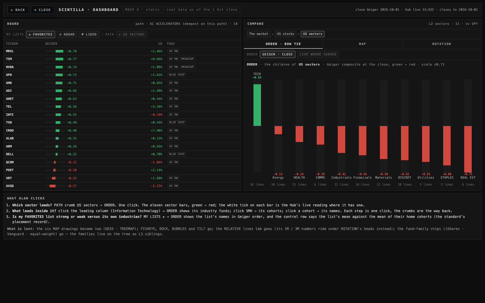
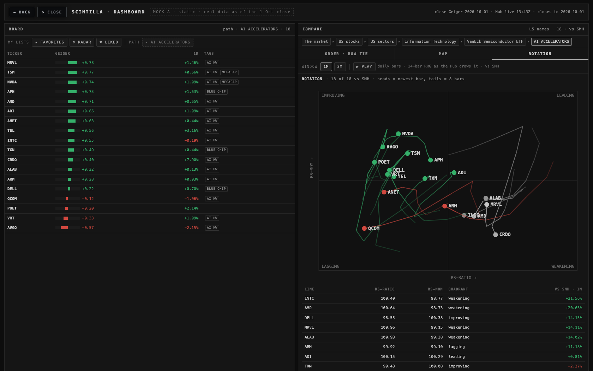
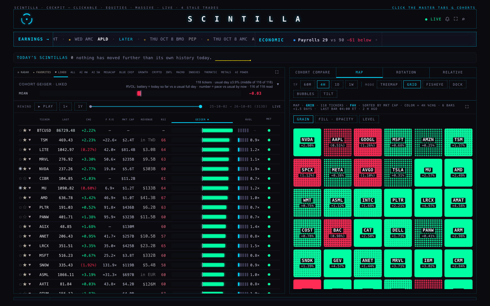
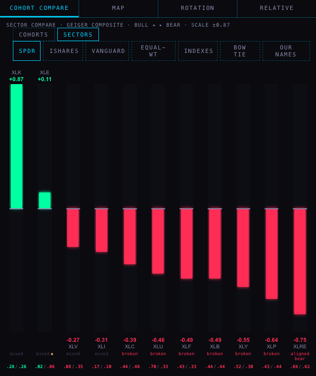
Every control of the right pane and of the board's strip, clicked in turn on https://scintillahub.ai/ (deployed 83610c9) with every non-GET request aborted: 36 pictures at 1680 and 35 at 390, zero page errors, zero blocked writes (the page never tried one). The header text each view printed is kept beside its picture in shots/facts-1680.json.
Verdicts: 11 keep · 9 merge · 4 drop. "Merge into" means the control's question is still answered, by the path or a lens, and the chip goes.
| control | what it shows | what it reads | overlaps with | verdict | reason | picture |
|---|---|---|---|---|---|---|
| Right pane · tab COHORT COMPARE | One column per cohort or sector, bars green → red by mean Geiger, with the read and trend / momentum under each | GCOMP (the Hub Geiger) over COHSETS membership; SECTORS mode reads the fund’s own Geiger | The tree’s bow tie at every node; the board’s COHORT GEIGER mean | KEEP → becomes ORDER | It is the one view that answers "which leads" directly. It only needs a path instead of two mode rows. | 1680 · 390 |
| COHORT COMPARE · COHORTS | SECTORS | Switches the columns between Alan’s 12 cohorts and the eleven sectors | window.SC_CMP_MODE (the rewind module) | The board’s scope tabs choose cohorts too; the tree’s L2 is the sectors | MERGE INTO the path picker | Cohorts and sectors are two nodes of one tree (L4 and L2). One crumb row replaces the toggle. | 1680 · 390 |
| SECTORS · SPDR · iSHARES · VANGUARD · EQUAL-WT | The same eleven sectors read through a different issuer’s fund | the funds’ own Geigers (/geiger) | Each family is an L3 sibling on the tree (XLK · IYW · VGT · RSPT under Technology) | MERGE INTO ORDER at L3 (one dropdown) | Four rows of near-identical bars; the differences between families belong one level down, where the tree already lists them side by side. | 1680 · 390 |
| SECTORS · INDEXES | Eleven broad index funds side by side (SPY · QQQ · DIA · IWM · RSP …) | the funds’ own Geigers | The tree’s L1 "US broad market" node | MERGE INTO ORDER at L1 | Same picture, found by walking up one level instead of a chip hidden under SECTORS. | 1680 · 390 |
| SECTORS · BOW TIE | Equal-weight fund minus its cap-weight twin, per sector: breadth | the funds’ own Geigers, paired | Nothing else shows breadth | KEEP (as a lens on any node with twins) | The one reading that is not a child-of-node ordering; it stays as its own switch. | 1680 · 390 |
| SECTORS · OUR NAMES | The names on Alan’s board in each sector, averaged (not the fund) | GCOMP over ticker_membership sectors | MY LISTS vs their home industries (the standard’s question) | MERGE INTO "my list vs home" | The question it answers is "are my names stronger than their sector?" The placement record answers it per name and per list, which this average blurs. | 1680 · 390 |
| Right pane · tab MAP | The scope’s names as squares in market-cap order, coloured by a timeframe’s % change | live board rows + a batched ohlcv read per (tf, cohort) | The board’s rows carry the same % change; TREEMAP sizes them | KEEP (GRID + TREEMAP) | A picture of the scope at a glance. Two drawings are enough. | 1680 · 390 |
| MAP · TF 60M · 4H · 1D · 1W | Changes the % change the colour encodes (shared with ROTATION and RELATIVE) | L0_TF → ohlcv_history / chart API | ROTATION and RELATIVE share it already | KEEP (one row, shared) | Already consolidated in R49; nothing to add. | 1680 · 390 |
| MAP · Mode TREEMAP | Squares sized by market value, quiet names fade | same rows + mcap | GRID | KEEP | Size matters at L2–L3 (a sector is its biggest names); the only mode that says so. | 1680 · 390 |
| MAP · Mode GRID | Uniform squares in cap order | same rows | TREEMAP | KEEP | The honest default; the one Alan sees on open. | 1680 · 390 |
| MAP · Mode FISHEYE | Cursor-driven distortion of the grid | same rows | GRID + cursor | DROP | A cursor effect, not a different reading. Untouchable on a phone ("touch · static grid"). | 1680 · 390 |
| MAP · Mode DOCK | Dock-style proximity scaling | same rows | GRID + cursor | DROP | Same as FISHEYE: an effect. Measured: identical header, identical data. | 1680 · 390 |
| MAP · Mode BUBBLES | Force-packed circles, area = market cap | same rows + mcap | TREEMAP | DROP | TREEMAP says size with no simulation and no settling time. | 1680 · 390 |
| MAP · Mode TILT | 3D parallax cards; the card under the cursor lifts | same rows | GRID | DROP (or keep as the one "show" mode) | Pretty, but the same squares. Alan never asked for it by name since R47. | 1680 · 390 |
| MAP · GRID · GRAIN | FILL · OPACITY | LEVEL | Three ways to paint the move into the square | HEAT_MODE | none; three encodings of one number | MERGE INTO one switch (GRAIN / FILL) | LEVEL and FILL·OPACITY both say "how big" with ink; one is enough. GRAIN stays because Alan approved the dots. | 1680 · 390 |
| Right pane · tab ROTATION | RRG of the scope vs SPY: eleven sectors on ALL, the scope’s twelve largest otherwise | ohlcv_history closes per symbol → l0RrgSeries (14-bar) | RELATIVE (same series, other picture); the tree has no rotation today | KEEP (a lens on the path node vs its parent fund) | Rotation is the one question ORDER cannot answer: who is gaining. It should run against the node’s own parent (names vs SMH), not always SPY. | 1680 · 390 |
| ROTATION · ▶ PLAY · ↻ LIVE | Walks the tails back 40 bars and forward again | the same cached series | none | KEEP | Cheap, honest ("as of Sep 11 · −14 bars"), and Alan asked for it (R45). | 1680 · 390 |
| ROTATION · scope follows the board tab | The names drawn are the board’s active cohort’s twelve largest | l0RotSet() | The path picker makes this explicit | MERGE INTO the path | Today the scope is set two panels away; on a path it is the crumb you are standing on. | 1680 · 390 |
| Right pane · tab RELATIVE | % change lines rebased to the left edge, scope vs SPY | the same closes | ROTATION (same series) | MERGE INTO ROTATION (1M / 3M numbers under each head; lines on demand) | Two tabs draw one dataset. The number Alan reads off the lines ("XLE +18.9% over 3M") fits beside the RRG head. | 1680 · 390 |
| RELATIVE · Window 1M · 3M · 6M | The bar count the lines are rebased over | L0_REL_WIN per tf | none | KEEP (as ROTATION’s window) | A real choice, kept; it moves with the lines. | 1680 · 390 |
| Board · scope tabs ⊙ RADAR · ★ FAVORITES · ♥ LIKED | Alan’s three lists | station_lists + hub_favorites | none | KEEP (first, default FAVORITES) | They are his. Alan on 2 Oct: default to FAVORITES. | 1680 · 390 |
| Board · scope tab ALL | Every served name (546 rows measured) | tickers | The tree’s L0 node | MERGE INTO the path (the market crumb) | ALL is the root of the tree with a different name. | 1680 · 390 |
| Board · 12 cohort tabs (AI HW · AI SW · MEGACAP · BLUE CHIP · GROWTH · CRYPTO · INTL · MACRO · INDEXES · THEMATIC · METALS · AI POWER) | The board narrowed to one of Alan’s early watch lists | tickers.cohort / ticker_membership → COHSETS | Nine of the twelve are L4 cohorts on the tree; the tags on every row | MERGE INTO tags + a tree path | Alan, 2 Oct: "the cohorts were an early watch list … now we have something way better." Kept as tags (the standard), reachable as tree nodes where one exists. | 1680 · 390 |
| SCENES room | The same four tabs at full width | the same renderers | the dashboard’s right pane | KEEP as the full-screen of the one COMPARE panel | It is already the same code; it inherits whatever the pane becomes. | 1680 · 390 |
Counted on the live page: the right pane's chip rows are TF (4) + Mode (6) + fill (3) on MAP = 13 chips in three rows; COHORT COMPARE carries 2 + 7 chips in two rows; ROTATION carries TF + PLAY; RELATIVE carries TF + Window (3). The board's strip carries 3 lists + ALL + 12 cohort tabs = 16 tabs. The brief's "17 cohort tabs" was the count before the five sector tabs were removed (the code says so at index.html:6093); today it is 12, and the tag column underneath (ticker_membership) has 12 board cohorts plus the industry and sector keys.
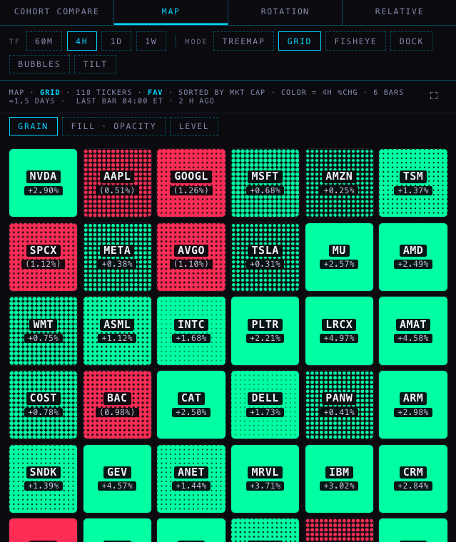
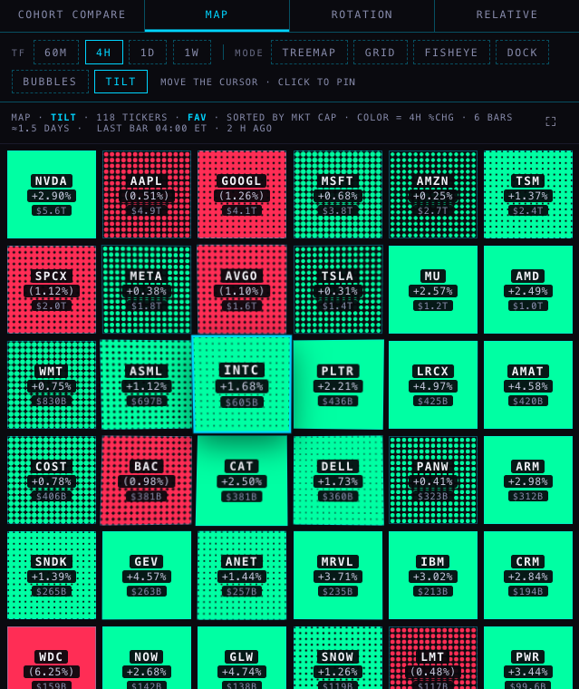
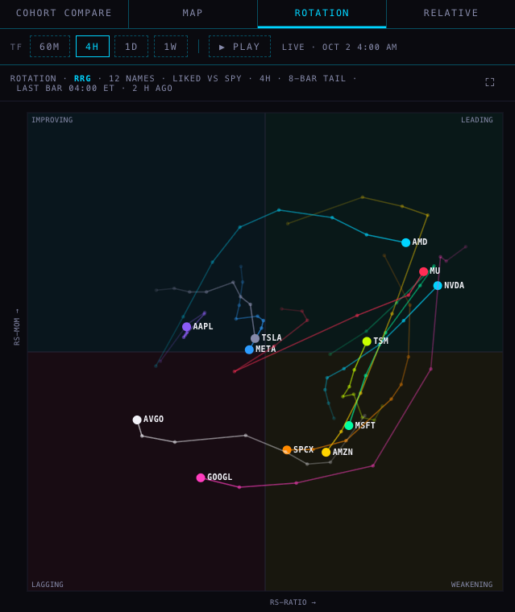
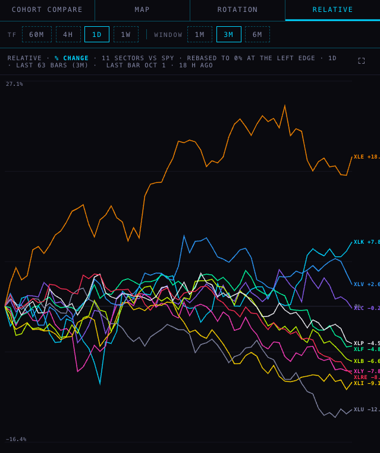
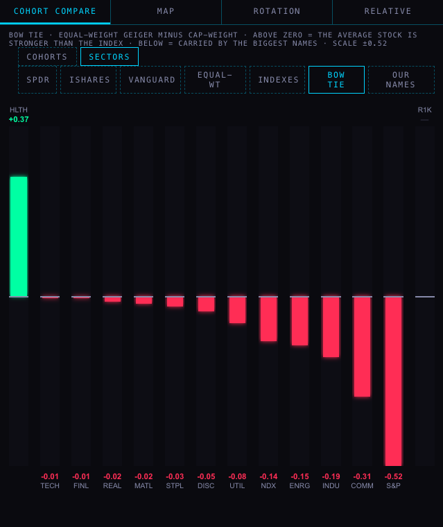
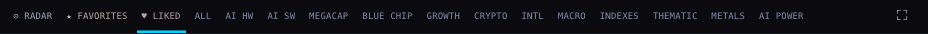
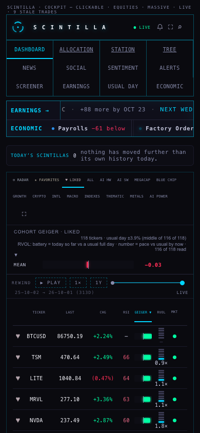
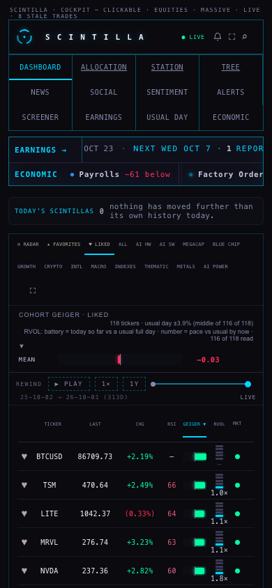
The standard's tree has six levels. At every node there are two bow ties: the bow tie of the children (the node's own question: what leads inside it) and the bow tie across the siblings (the parent's question, which is the same picture one level up). So "Financials vs Technology vs Healthcare" is not a new tab: it is ORDER on "US sectors". Rotation is a different question, "who is gaining on whom", and it needs a benchmark: the node's own parent fund (names vs SMH, industry funds vs XLK, sectors vs SPY), not SPY for everything as today. Relative performance is the same series as rotation drawn as lines; its numbers (1M, 3M against the parent) ride under the rotation heads. One worked example per level, on the 2026-10-01 close:
| node | line | Geiger · close | from | rotation vs parent | 1M vs parent | 3M vs parent |
|---|---|---|---|---|---|---|
| Dollar and volatility | UUP | +0.13 | 2 lines | leading | +3.61% | +1.14% |
| Crypto | IBIT | -0.00 | 3 lines | weakening | +10.55% | +36.50% |
| Commodities | DBC | -0.05 | 4 lines | improving | +3.52% | +22.22% |
| US stocks | SPY | -0.06 | 3 lines | weakening | +1.24% | +1.54% |
| The whole world | VT | -0.38 | 5 lines | — | — | — |
| Bonds | TLT | -0.77 | 6 lines | improving | -4.13% | -10.17% |
Read: the dollar-and-volatility line is the only one above zero; bonds are the weakest. Rotation at this level runs on one representative fund per heading (SPY · VT · TLT · DBC · IBIT · UUP) because headings have no price.
| node | line | Geiger · close | from | rotation vs parent | 1M vs parent | 3M vs parent |
|---|---|---|---|---|---|---|
| US style and factor | RSP | +0.15 | 7 lines | improving | -4.24% | -5.33% |
| US broad market | SPY | +0.00 | 13 lines | — | — | — |
| US sectors | RSP | -0.34 | 11 lines | improving | -4.24% | -5.33% |
| International developed | EFA | -0.31 | 5 lines | improving | -3.74% | -4.06% |
| Emerging markets | EEM | -0.28 | 5 lines | improving | -0.23% | -0.89% |
Useful mostly as a crumb: the sector heading is where the real question starts. The broad funds (SPY · RSP · QQQ · IWM …) are the old INDEXES chip, found here instead.
| node | line | Geiger · close | from | rotation vs parent | 1M vs parent | 3M vs parent |
|---|---|---|---|---|---|---|
| Information Technology | XLK | +0.63 | 16 lines | weakening | +7.43% | +6.96% |
| Energy | XLE | -0.13 | 10 lines | improving | -3.49% | +15.23% |
| Health Care | XLV | -0.24 | 11 lines | weakening | -3.48% | -1.08% |
| Communication Services | XLC | -0.28 | 6 lines | lagging | -1.14% | -2.27% |
| Industrials | XLI | -0.41 | 11 lines | improving | -2.66% | -10.88% |
| Financials | XLF | -0.45 | 14 lines | improving | -6.83% | -6.46% |
| Materials | XLB | -0.50 | 12 lines | lagging | -7.07% | -9.25% |
| Consumer Discretionary | XLY | -0.52 | 10 lines | improving | -5.33% | -9.67% |
| Utilities | XLU | -0.55 | 5 lines | improving | -7.06% | -15.87% |
| Consumer Staples | XLP | -0.60 | 5 lines | improving | -6.06% | -8.06% |
| Real Estate | XLRE | -0.71 | 6 lines | improving | -7.92% | -11.53% |
The leader is Information Technology at +0.63 (the heading aggregates its 16 lines, as the tree does); every other sector is below zero. The same question through the SPDR funds' own readings: XLK +0.86, XLE +0.21, XLV -0.30, XLI -0.37 … XLRE -0.76. Rotation says who is gaining: XLE, XLI, XLU, XLF, XLP, XLY, XLRE are improving against SPY while XLK, XLV are weakening, and over 3M XLE is +15.23% against SPY against XLK's +6.96%. That is the answer the four tabs give today in three places; here it is one node.
| node | line | Geiger · close | from | rotation vs parent | 1M vs parent | 3M vs parent |
|---|---|---|---|---|---|---|
| Invesco S&P 500 Equal Weight Technology | RSPT | +0.86 | improving | -1.73% | +0.32% | |
| State Street Technology Select Sector SPDR ETF | XLK | +0.86 | 50 holdings | — | — | — |
| Vanguard Information Technology | VGT | +0.84 | improving | -0.87% | +1.25% | |
| iShares U.S. Technology | IYW | +0.81 | lagging | -0.10% | +0.05% | |
| iShares Expanded Tech Sector | IGM | +0.81 | lagging | -0.42% | -0.99% | |
| VanEck Semiconductor ETF | SMH | +0.77 | 24 holdings | weakening | +5.60% | -5.23% |
| First Trust NASDAQ Cybersecurity | CIBR | +0.74 | 18 holdings | lagging | +0.16% | +4.92% |
| iShares Semiconductor ETF | SOXX | +0.73 | 24 holdings | weakening | +7.48% | -7.77% |
| First Trust Cloud Computing | SKYY | +0.69 | 29 holdings | lagging | -3.83% | +14.27% |
| KraneShares Public-Private AI & Technology ETF | AGIX | +0.69 | 42 holdings | lagging | +0.97% | -1.37% |
| iShares Expanded Tech-Software Sector | IGV | +0.67 | 30 holdings | improving | -5.79% | +6.13% |
| Roundhill Memory ETF | DRAM | +0.64 | 4 holdings | leading | +4.94% | -7.23% |
| SPDR S&P Semiconductor | XSD | +0.56 | weakening | +5.62% | -13.11% | |
| Defiance Quantum | QTUM | +0.56 | lagging | -1.70% | -10.67% |
Fourteen funds, all green; the spread is +0.86 (RSPT, equal-weight) to +0.56 (QTUM). Here rotation separates them: SMH, SOXX, XSD and DRAM are the ones that have gained on XLK over 1M (SMH +5.60%, SOXX +7.48%, DRAM +4.94%, XSD +5.62%); software (IGV -5.79%) has lost. The fund families (XLK · IYW · VGT · RSPT) are siblings here, which is where today's four family chips go.
| node | line | Geiger · close | from | rotation vs parent | 1M vs parent | 3M vs parent |
|---|---|---|---|---|---|---|
| MEMORY & SEMI EQUIPMENT | +0.56 | 10 names | — | — | — | |
| SMH SET | +0.44 | 1 names | — | — | — | |
| AI HARDWARE | +0.41 | 17 names | — | — | — | |
| AI ACCELERATORS | +0.37 | 18 names | — | — | — |
The cohort means are close (+0.56 to +0.37); a bow tie of four is honest but thin. At this level the comp-set edges and the agreement view (the standard's E7) matter more than the ordering.
| name | Geiger · close | Hub live | rotation vs SMH | 1M vs SMH | 3M vs SMH |
|---|---|---|---|---|---|
| MRVL | +0.78 | +0.80 | weakening | +14.11% | +4.98% |
| TSM | +0.77 | +0.81 | improving | -2.40% | +1.46% |
| NVDA | +0.74 | +0.79 | improving | -7.14% | +14.18% |
| APH | +0.73 | +0.77 | improving | -8.31% | -0.21% |
| AMD | +0.71 | +0.76 | weakening | +20.65% | +14.60% |
| ADI | +0.66 | +0.68 | leading | +0.81% | +2.97% |
| ANET | +0.63 | +0.70 | lagging | -5.27% | +23.51% |
| TEL | +0.56 | +0.56 | improving | -8.62% | +5.98% |
| INTC | +0.55 | +0.62 | weakening | +21.56% | -4.60% |
| TXN | +0.49 | +0.55 | improving | -2.27% | -8.32% |
| CRDO | +0.40 | +0.41 | weakening | -11.60% | -17.43% |
| ALAB | +0.32 | +0.34 | weakening | +14.02% | -16.61% |
| ARM | +0.28 | +0.36 | lagging | +11.18% | -11.58% |
| DELL | +0.22 | +0.31 | improving | +14.15% | +33.08% |
| QCOM | -0.12 | -0.03 | lagging | -4.02% | -1.00% |
| POET | -0.20 | -0.12 | improving | -5.71% | -17.09% |
| VRT | -0.33 | -0.21 | improving | -17.16% | -22.41% |
| AVGO | -0.57 | -0.54 | improving | -20.36% | -8.97% |
Leader by Geiger: MRVL +0.78. Gaining fastest on SMH over 1M: INTC +21.56%, which the Geiger order alone would not show. The Hub's live column shows how far the morning has moved each name from its close reading: on these 18 the largest gap is 0.12.
Each mock is a static page beside this one, drawn from the same data file (data/mock-data.js), clickable, nothing fetched. For each: what Alan clicks to answer the three questions, and what is lost.
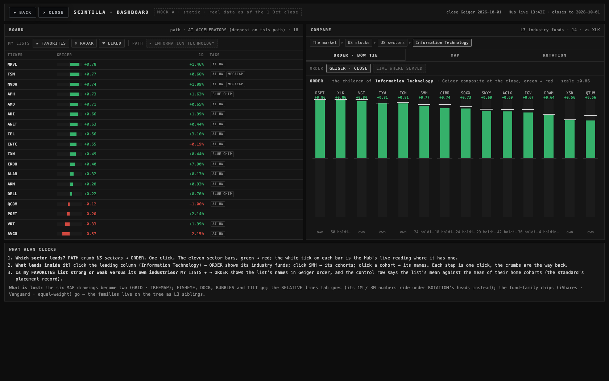
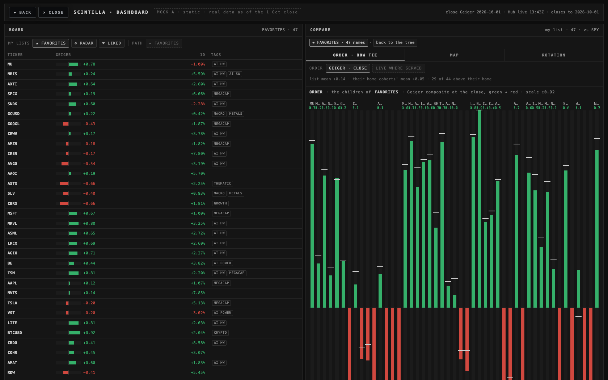
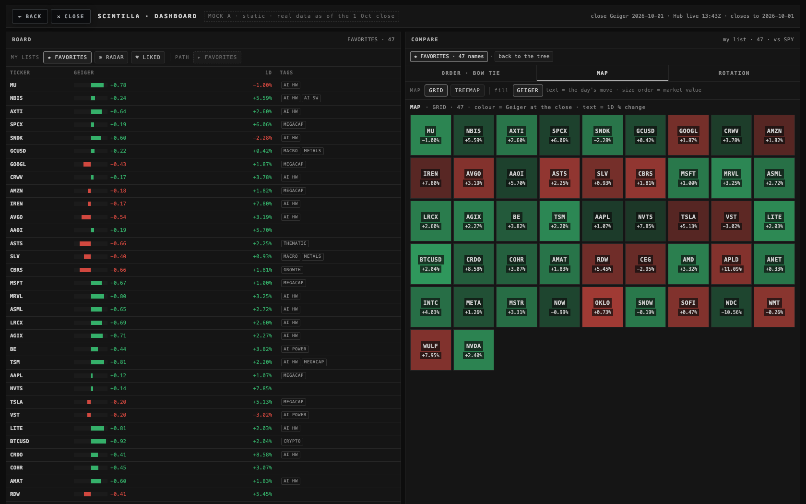
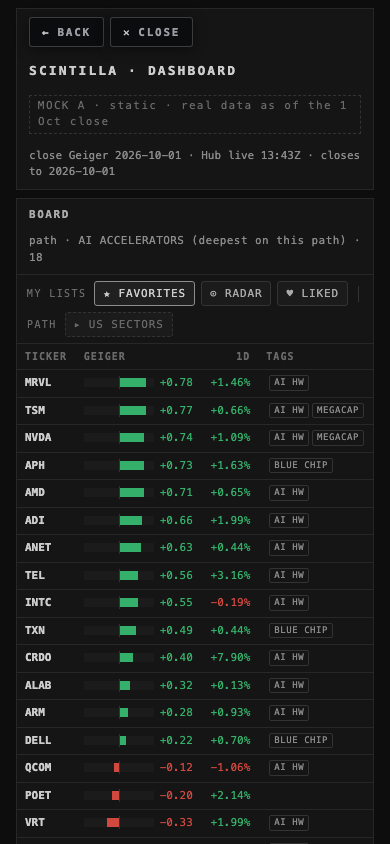
A long node (FAVORITES has 47, LIKED 118) makes a bow tie of 47 columns; at 390 it is unreadable. Alan's coil ("two snakes, mirrored") is the right picture there; it is drawn in words in §6 and not mocked here.
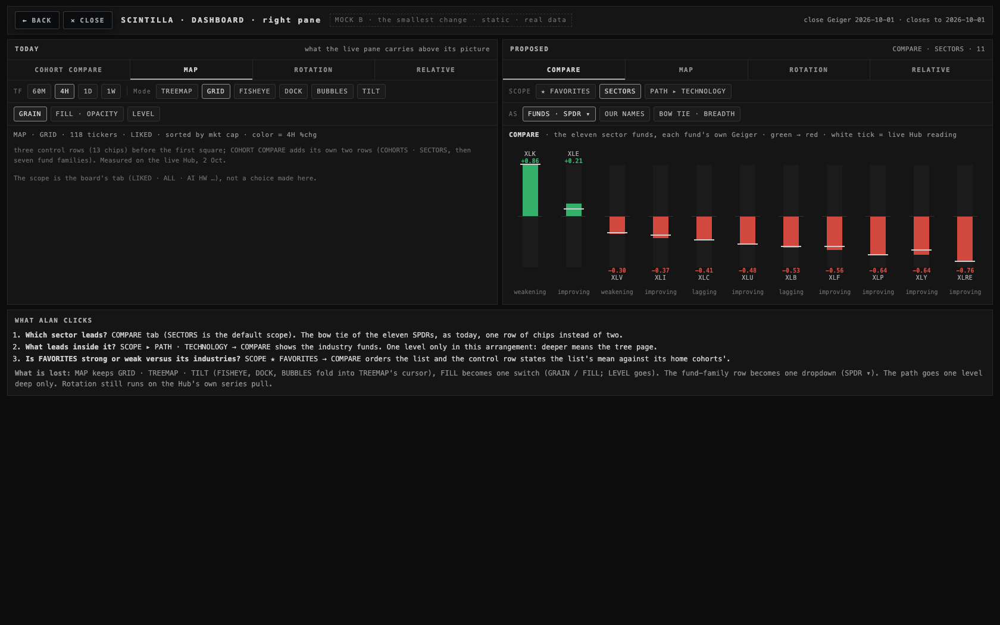
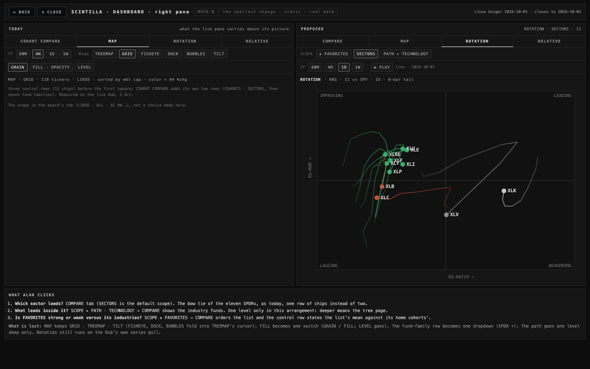
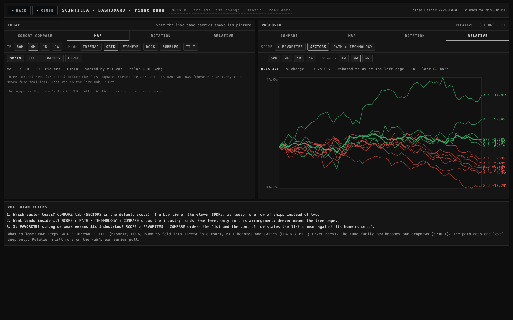
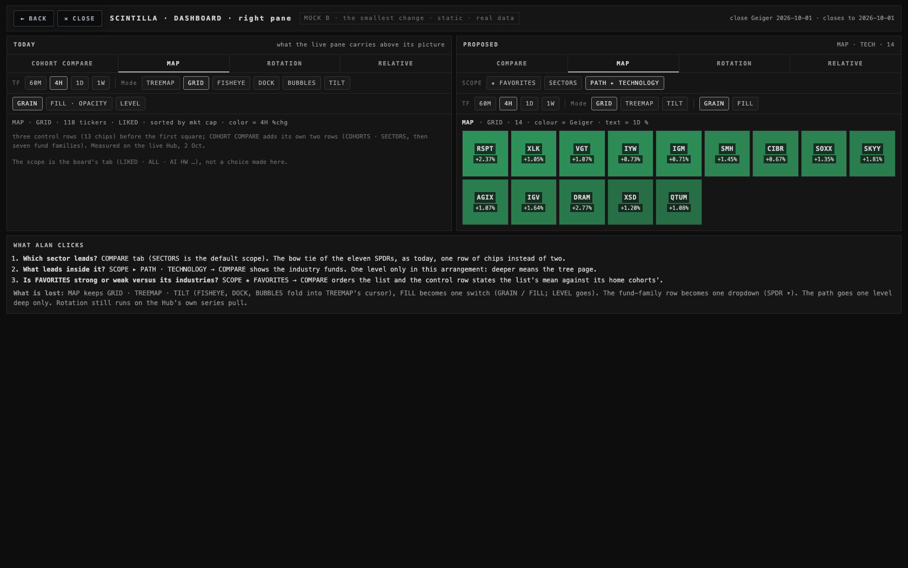
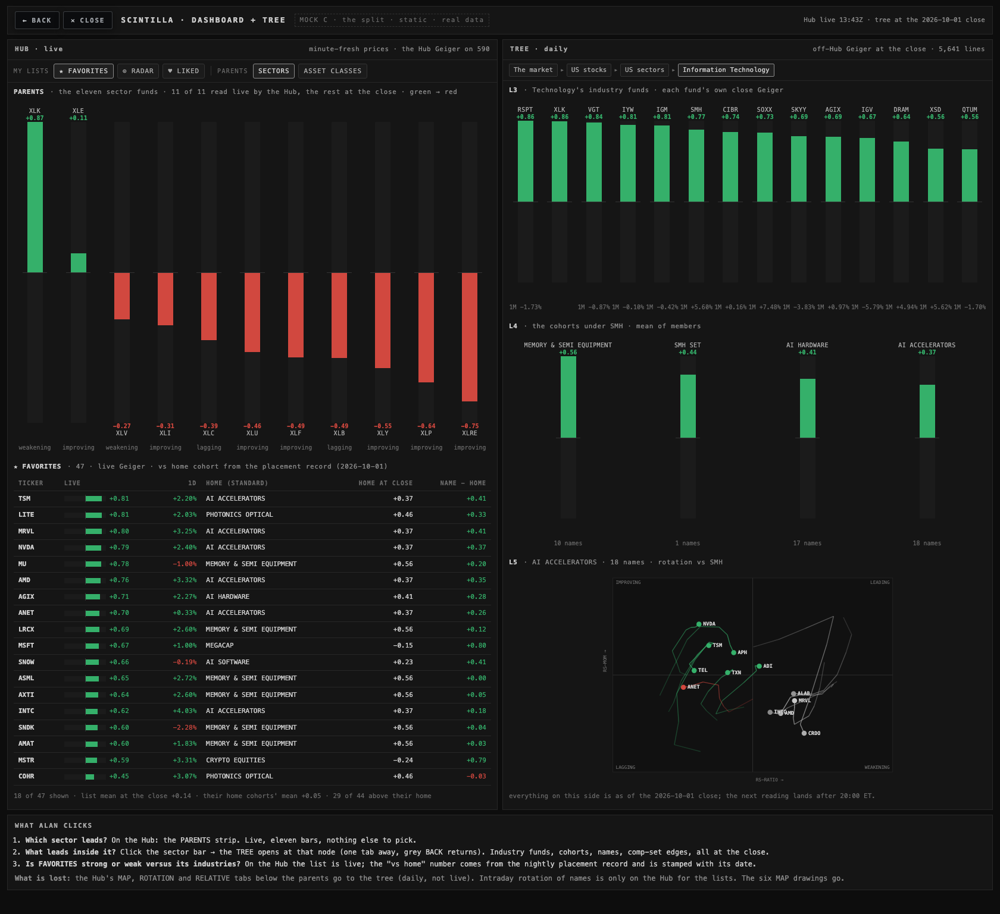
The Hub's Geiger is live and covers 590 names; the off-Hub reading covers 5,641 lines at the close (and a second run in the morning when P8's schedule lands). The split follows from that one fact: what needs minutes stays on the Hub; what needs breadth lives on the tree. Each line names its cost.
The seam is at L2/L3: standing on a sector on the Hub, the next click down opens the tree. On the Hub the panel says "live"; on the tree it says "at the 2026-10-01 close · next after 20:00 ET". Both pages already carry the grey BACK / CLOSE pair.
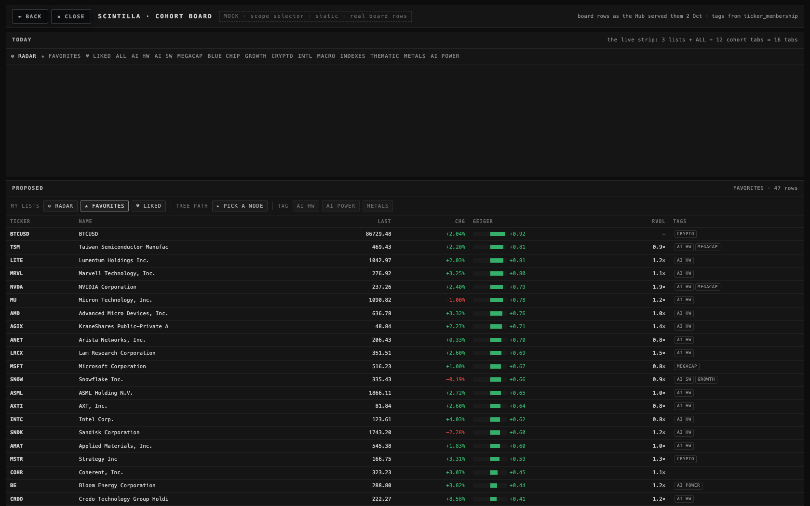
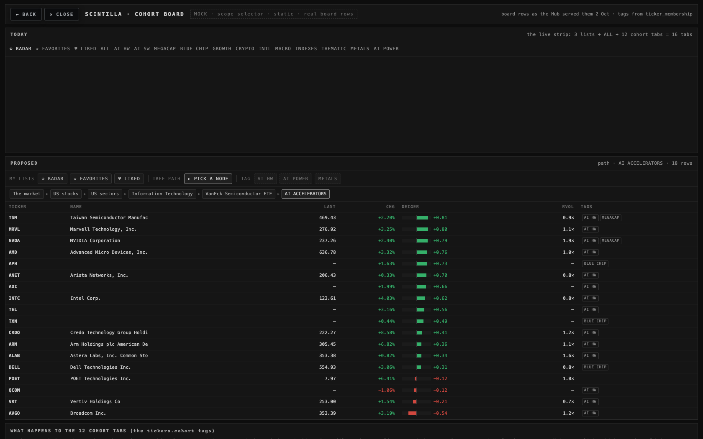
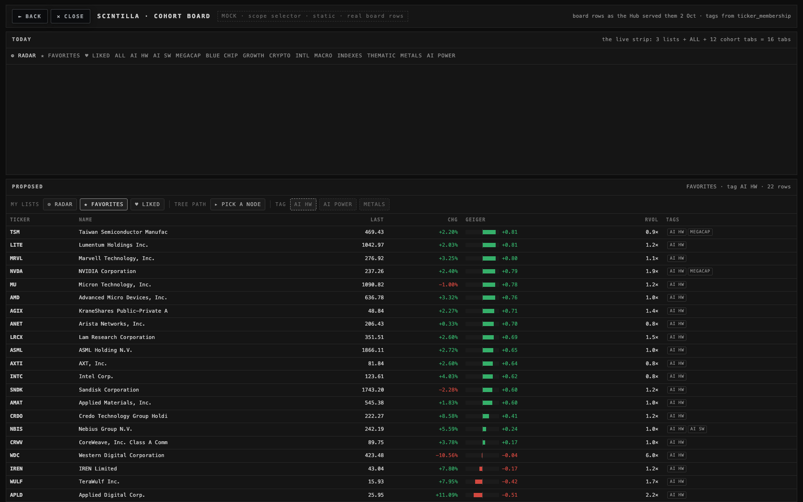
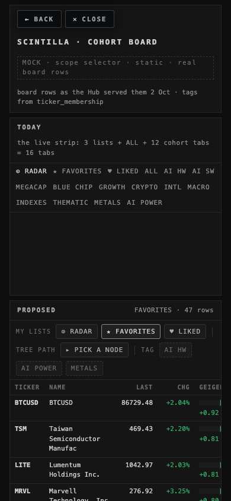
What happens to the 12 cohort tabs. They become tags, which they already are underneath (tickers.cohort and ticker_membership; the standard keeps them as tags). Each row shows its tags; a TAG chip filters whatever list or node is open. Nine of the twelve also exist as tree nodes (AI HW, AI SW, MEGACAP, GROWTH, INTL, MACRO, INDEXES, THEMATIC, METALS) and are reachable from TREE PATH; BLUE CHIP, CRYPTO, AI POWER have no adopted node and stay tags only until E5 proposes one. ALL becomes the market crumb. Default scope: FAVORITES (Alan, 2 Oct).
| step | what ships | needs | reversible |
|---|---|---|---|
| 1 · safe to ship first | B's chip consolidation in the existing pane: MAP modes to GRID · TREEMAP · TILT, fill to one switch, the family row to one dropdown, RELATIVE's window beside ROTATION; default board scope FAVORITES. No data change, no new read. | nothing new; the same renderers | yes: one commit, the old chips come back with it |
| 2 · the one panel | The path row and the three lenses on the Hub, for the scopes the Hub reads live (lists, L0–L2 parents). ORDER on a node = the strip's renderer on the node's children; ROTATION vs the node's parent fund. | a tree index the Hub can read (tree.json is already served at /deliverables/20260929/tree-map/) | yes: the old four tabs stay behind a flag until Alan has used it a week |
| 3 · needs the placement record (E1) | The "vs home" number per name and per list; the board's TREE PATH below L2; the tags as filters from the record rather than from tickers.cohort; the coil for long nodes. | E1 nightly job + the record table; E4 (P8's seven-rung close reading) is already running | additive tables only; pre-approved |
| 4 · waits for Alan | Which tabs leave the Hub (MAP · ROTATION · RELATIVE below L2); whether TILT stays; the 3D areas; adopting cohorts from the tree's bottom; the Hub streamlining the standard lists as E8 ("discussion first"). | his look at the mocks | — |
The coil (Alan's "two snakes, mirrored") for a node with more than ~16 children: the greens coil upward from the centre with the highest Geiger at the tip, the reds coil downward with the most negative at the other tip, zero flat in the middle. It is the bow tie bent so 47 or 118 names fit a pane. It needs the same data as ORDER and is step 3 work.
index.html at 83610c9 (the tabs at line 10000, the control row at 10024, the MAP modes at 9144, the TF menu at 8555, the cohort list at 6068, the strip at 7929) and the live page, driven by harness/inventory-shots.mjs; facts in shots/facts-1680.json and facts-390.json, the board state in shots/state-1680.json (Alan's lists, the rows' Geigers, the membership map).deliverables/20260929/tree-map/tree.json (739 nodes: 23 headings, 138 funds, 102 cohorts, 476 names). Headings aggregate their children as the tree page does; funds blend their served holdings by weight (aggregate.js's rule); cohorts average their members./v1/scout-geiger, run scout-geiger-nightly-20261002T002101Z-d9e8e4, seven rungs, 5,641 rows, as of 2026-10-01; saved in data/scout-geiger-seven-20261001.json./geiger at 2026-10-02T13:43:57.008Z (590 names); data/hub-geiger-20261002T1343Z.json./candles?tf=1d&limit=320 for 84 symbols (data/closes-1d-20261002.json, newest bar 2026-10-01); the RRG maths is the Hub's l0RrgSeries ported line for line in harness/build-data.py (4-bar EMA of relative strength, 14-bar z-score, 4-bar momentum, 2-bar EMA); relative = the symbol's % change over 21 / 63 bars minus the benchmark's.home_id and sector from tree.json (the home-path rule of 29 Sep, not yet the E1 record); the list's mean vs the mean of those homes' Geigers.index.html, the tree page and every table are untouched; the Indicator Lab was not opened.Branch hub/x1-compare-proposal-20261002 from origin/hub/release-20260923 @ 83610c9. Headless only; no browser window was opened on this Mac; every browser process was closed before returning.